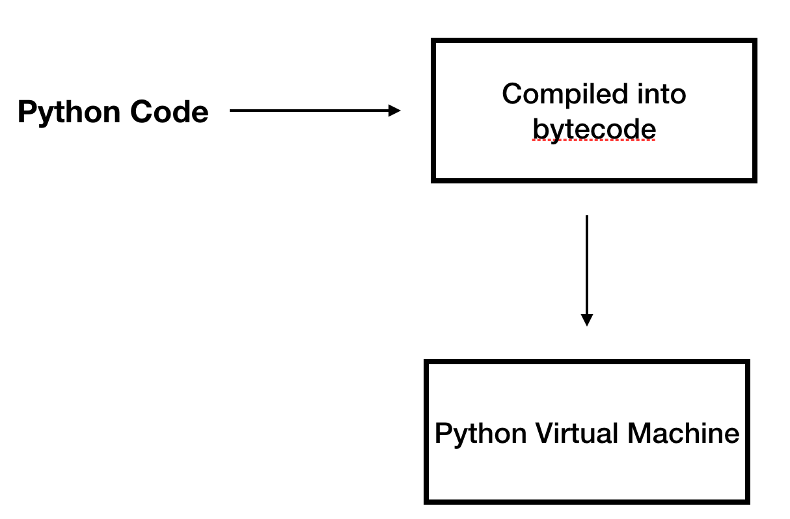

Brief_introduction¶
Project directory overview¶
Doc: The manual
Grammer: Where Grammer is defined
Include: The C headers
Lib: The Python modules
Modules: The C modules
Objects: The builtin object(string, list, bool, tuple)
Parser: Grammer, lexer, parser, compiler
Programs: The executable python program
Python: The virtual machine
Python includes a compiler, interpreter.However, the compilation doesn’t do much work. After compilation, the source code would turn into bytecode,which is code object.
Code object Compiled by CPython compiler can not be directly executed by the computer, it needs to be executed by the virtual machine, which is, interpreter.
Also, the virtual machine is running on a stack, and each frame has its own data stack. If not, we don’t have the generator feature.
The reason that Python is called a dynamic language is that many things are done when the program is running, such as type checking.
def add(a, b):
return a+b
add(1,2)
add("hello","world")

Full Grammar specification: https://docs.python.org/3/reference/grammar.html